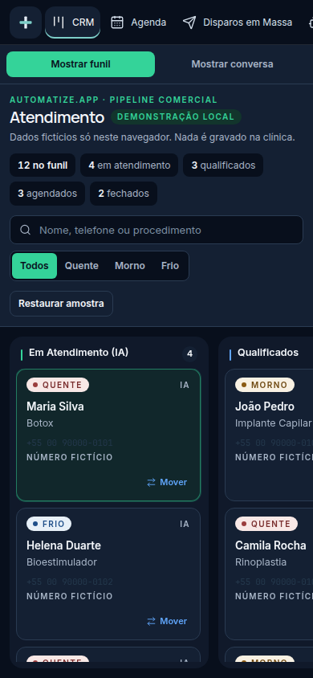
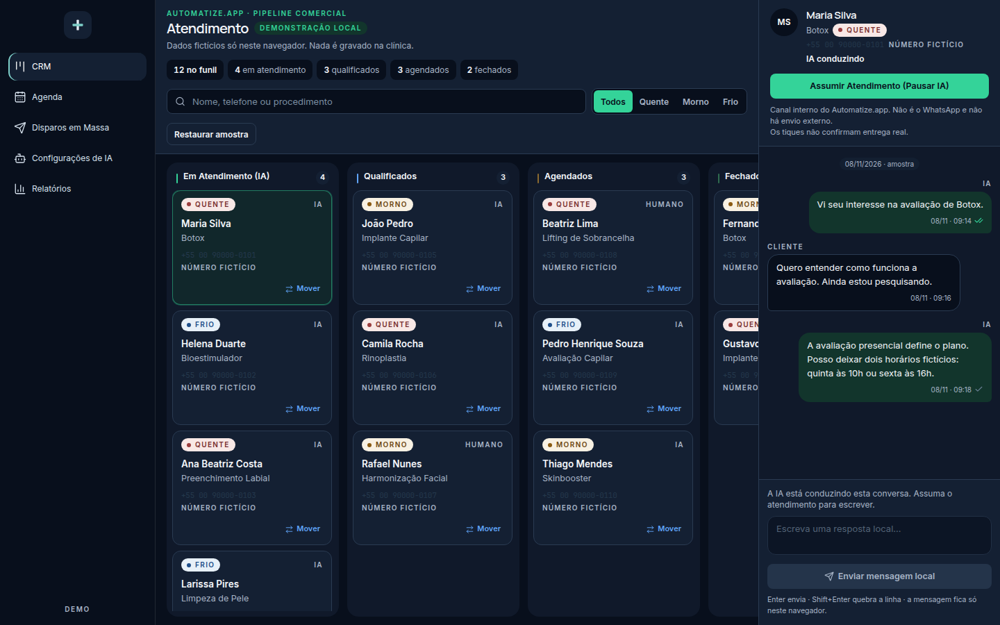

O doutor, no celular
Acompanha o caminho do paciente da clínica, no consultório ou fora. A tela é a visão do dono, com dados fictícios.
Para a recepção encaminhar e para o doutor ver em poucos minutos.
Menos paciente esquecido no WhatsApp, menos falta na agenda e mais avaliação no Google, com tudo no seu celular.
Ouça a mensagem
A próxima começa em seguida.
Mostro o aplicativo por dentro e onde a clínica perde paciente hoje.
O WhatsApp desta call ainda não está no link.
O método Automatize
Seis momentos em que a clínica costuma perder paciente. Em cada um, o aplicativo manda a mensagem certa, na hora certa, no tom da clínica. Toque em cada etapa.
Demonstração ilustrativa, com nomes e horários fictícios. Instagram e Google entram na implantação.
Conta rápida da clínica
Arraste a régua com quantas mensagens a clínica recebe por dia.
Mostro o aplicativo por dentro e onde a clínica perde paciente hoje.
Dois lugares, o mesmo painel
O doutor acompanha no celular. A recepção conduz o dia no computador.

Acompanha o caminho do paciente da clínica, no consultório ou fora. A tela é a visão do dono, com dados fictícios.

Conduz a fila, as conversas e a agenda no mesmo painel da clínica. A recepção vê o que está esperando.
Uma conversa
O paciente manda áudio, a resposta sai na hora e a avaliação fica marcada. Escolha a especialidade.
Resposta na hora
Sua clínica
online
Demonstração ilustrativa.
Por dentro
Instagram e o pedido de avaliação no Google estão no painel e entram na implantação. Toque um módulo para ver a tela. Os dados são fictícios.
Demonstração ilustrativa
Pesquisa da Doctoralia: 80% dos pacientes escolhem o especialista pelas avaliações online.
Pixel em breve. A nossa equipe liga o Pixel na implantação, junto com o que a clínica já usa.
Em 15 minutos você vê o aplicativo por dentro e quanto a clínica está deixando passar hoje.
Pelo WhatsApp, no horário que for melhor pra você.
Automatize.app é um produto da DevBrasil · 60.095.721 MARCOS PAULO DA SILVA · CNPJ 60.095.721/0001-54 · Barueri/SP · devbrasil.devbr@gmail.com
Demonstração ilustrativa · sem login